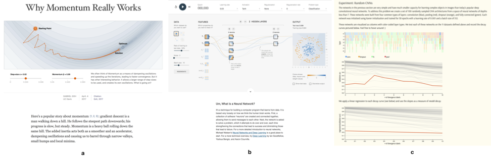

1st Workshop on
Visualization for AI Explainability
October 22, 2018 at IEEE VIS in Berlin, Germany
The role of visualization in artificial intelligence (AI) gained significant attention in recent years. With the growing complexity of AI models, the critical need for understanding their inner-workings has increased. Visualization is potentially a powerful technique to fill such a critical need.
The goal of this workshop is to initiate a call for “explainables” that explain how AI techniques work using visualizations. We believe the VIS community can leverage their expertise in creating visual narratives to bring new insight into the often obfuscated complexity of AI systems.

Program Overview
| 2:20 -- 2:25 | Welcome from the Organizers |
| 2:25 -- 3:10 | Keynote: Been Kim (Google Brain)
Towards interpretability for everyone: Testing with Concept Activation Vectors (TCAV) The ultimate goal of interpretability is to help users gain insights into the model for more responsible use of ML. Unlike the majority of subfields in ML, interpretable ML requires studying how humans parse complex information and exploring effective ways to communicate such information. This human aspect becomes even more critical when developing interpretability methods for non-ML experts/layer users --- my core research agenda. I will share some interpretability methods that are designed with or without considering human aspect, and where they succeeded or fall short. I will take a deeper dive in one of my recent work - testing with concept activation vectors (TCAV) - a post-training interpretability method for complex models, such as neural network. This method provides an interpretation of a neural net's internal state in terms of human-friendly, high-level concepts instead of low-level input features. Most importantly, I will share some open questions in interpretability methods that are calling for visualization community's expertise. |
| 3:10 -- 3:35 | Session I: Neural Networks and Deep Learning Visualising State Space Representations of Long Short-Term Memory Networks -- Emmanuel M. Smith, Jim Smith, Phil Legg and Simon Francis Visualizing neuron activations of neural networks with the grand tour -- Mingwei Li, Zhenge Zhao and Carlos Scheidegger Embodied Machine Learning: An educational, human MNIST classifier -- Philipp Schmitt |
| 3:35 -- 4:00 | Session II: Projections and Dimensionality Reduction
Roads from Above -- Greg More, Slaven Marusic and Caihao Cui The Beginner's Guide to Dimensionality Reduction -- Matthew Conlen and Fred Hohman Dimension, Distances, or Neighborhoods? Projection Literacy for the Analysis of Multivariate Data -- Dirk Streeb, Rebecca Kehlbeck, Dominik Jäckle and Mennatallah El-Assady |
| 4:00 -- 4:20 | Coffee Break with Poster Session |
| 4:20 -- 4:45 | Session III: Data Distribution and Bias A Visual Exploration of Gaussian Processes -- Jochen Görtler, Rebecca Kehlbeck and Oliver Deussen Towards an Interpretable Latent Space -- Thilo Spinner, Jonas Körner, Jochen Görtler and Oliver Deussen Understanding Bias in Machine Learning -- Jindong Gu and Daniela Oelke |
| 4:45 -- 5:10 | Session IV: Machine Learning Processes and Explanation
Strategies Minions, Sheep, and Fruits: Metaphorical Narratives to Explain Artificial Intelligence and Build Trust -- Wolfgang Jentner, Rita Sevastjanova, Florian Stoffel, Daniel Keim, Jurgen Bernard and Mennatallah El-Assady Aimacode Javascript - Minimax -- Michael Kawano Going beyond Visualization: Verbalization as Complementary Medium to Explain Machine Learning Models -- Rita Sevastjanova, Fabian Beck, Basil Ell, Cagatay Turkay, Rafael Henkin, Miriam Butt, Daniel Keim and Mennatallah El-Assady |
| 5:10 -- 5:55 | Moderated Panel Discussion |
| 5:55 -- 6:00 | Best submission ceremony and "Auf Wiedersehen" :) |
| 8:00 -- ... | VISxAI Eastcoast party |
Posters
What is Bayesian Knowledge Tracing? -- Young Cho, Grace Mazzarella, Kelvin Tejeda, Tongyu Zhou and Iris HowleyRecsys: what is a recommendation in the Age of Machine Learning -- Iskra Velitchkova, Juan Arévalo and Marco Creatura
Understanding ML through Topological Data Analysis -- Nathaniel Saul and Dustin L Arendt
Explaining neural network concepts through an interactive visualization -- Roberto Stelling and Adriana S Vivacqua
Plainability: Explainability for 1-Dimensional Temporal Inputs -- Humberto Simon Garcia Caballero, Michel Westenberg and Binyam Gebre
Awards
Best PaperA Visual Exploration of Gaussian Processes -- Jochen Görtler, Rebecca Kehlbeck and Oliver Deussen
Best Paper, Honorable Mention
The Beginner's Guide to Dimensionality Reduction -- Matthew Conlen and Fred Hohman
Roads from Above -- Greg More, Slaven Marusic and Caihao Cui
Important Dates
July 12, 2018, 5:00pm PDT: Blog/Notebooks + Position Paper Submission
August 2, 2018: Author Notification
September 3, 2018: Camera-ready Copy for Accepted Submissions
September 7, 2018: VIS Early Bird Registration Ends
October 22 -- Workshop in Berlin at IEEE VIS 2018
Call for Participation
SUBMISSION CLOSED
To make our work more accessible to the general audience, we are soliciting submissions in a novel format: blog-style posts and jupyter-like notebooks. In addition we also accept position papers in a more traditional form. Please contact us, if you want to submit a original work in another format. Email: orga.visxai at gmail.com
Explainables (Blogs, Markup, and Notebooks)
Explainable submissions are the core element of the workshop, as this workshop aims to be a platform for explanatory visualizations focusing on AI techniques.
Authors have the freedom to use whatever templates and formats they like. However, the narrative should be visual and interactive, and walk readers through a keen understanding on the ML technique or application. Authors may wish to write a Distill-style blog post (format), interactive Idyll markup, or a Jupyter or Observable notebook that integrates codes, visualizations to tell the story.
Here are a few examples of visual explanations of AI methods in these types of formats:
- [blog-style] http://www.r2d3.us/visual-intro-to-machine-learning-part-1/
- [blog-style] http://formafluens.io/client/mix10.html
- [markup] https://idyll-lang.org/gallery/the-barnes-hut-approximation
- [notebook] https://beta.observablehq.com/@nstrayer/t-sne-explained-in-plain-javascript
- [markup] http://nbviewer.jupyter.org/github/agconti/kaggle-titanic/blob/master/Titanic.ipynb
- [blog-style] https://distill.pub/2017/momentum/
While these examples are informative and excellent, we hope the visualization community will think about ways to creatively expand on such foundational work to explain AI methods using novel interactions and visualizations often present at IEEE VIS. Please contact us, if you want to submit a original work in another format. Email: orga.visxai at gmail.com
The best works will be invited to submit their extended work to the online publishing platform distill.pub to generate a cite-able publication for authors.
Position Papers
We will also accept position papers about impact and role of explainables for VIS in AI. Submissions should be no more than 6 pages long and formatted according to the VGTC formatting guidelines. Some good example of a position papers (not all for AI) can be found here:
- Considerations for Visualizing Comparison
- Risk the Drift! Stretching Disciplinary Boundaries through Critical Collaborations between the Humanities and Visualization
- Towards better analysis of machine learning models: A visual analytics perspective
- Pathways for Theoretical Advances in Visualization
Organizers (alphabetic)
Mennatallah El-Assady - University of Konstanz
Duen Horng (Polo) Chau - Georgia Tech
Adam Perer - Carnegie Mellon University
Hendrik Strobelt - IBM Research, MIT-IBM Watson AI Lab
Fernanda Viégas - Google Brain
Program Committee
Adam PererAlexander Rush
Arvind Satyanarayan
Brady Redfearn
Carlos Scheidegger
Jaegul Choo
Christian Bors
Christopher Collins
David Bau
Duen Horng (Polo) Chau
Dustin Arendt
Dylan Cashman
Lana El Sanyoura
Fernanda Viégas
Fred Hohman
Hendrik Strobelt
Iris Howley
Juergen Bernard
Kanit Wongsuphasawat
Martin Wattenberg
Matthew Conlen
Mennatallah El-Assady
Minsuk Kahng
Rita Borgo
Sebastian Gehrmann
Tommy Dang
Yamini Bansal
Yang Wang